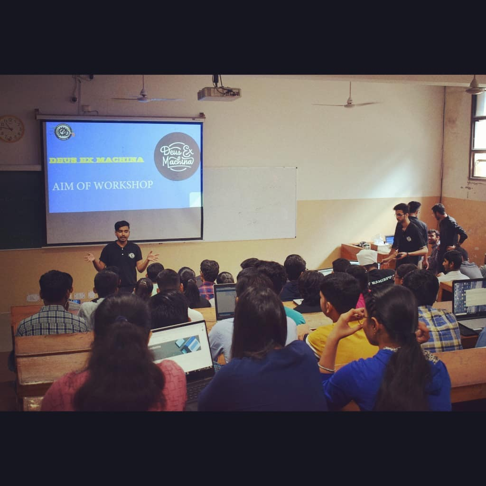
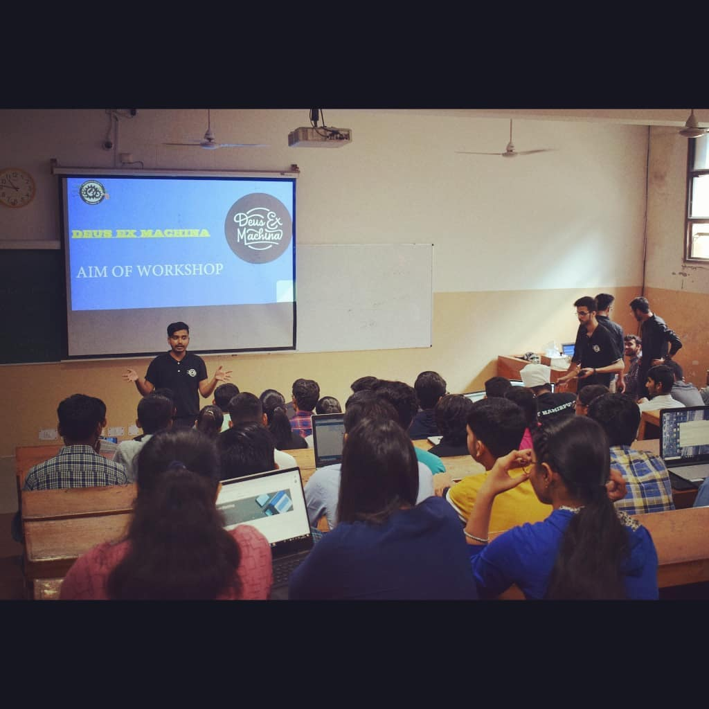

Team CSOC brings NITH Interns Talk.
A talk session in which final year B.Tech.Students will share their internship experiences
and you to get the internship you want.
We have students who did their internship from foreign universities and IITS/IISC
as well as students who went for industrial internship.
This event is open for all branches .Dont miss the opportunity and be
a part of it.
A guest lecture is organised in auditorium .The lecture is by Mr.Pranav Sharma who is a
Astrophysicist,Polymath,Science Communicator,Space Museum Curator,Fellow of the
Astronomical Society.
The lecture is on astrophysics.Those who are intersted in astrophysics
can join us at respective venue on scheduled time.
Venue:Auditorium
Date:19 October
Time:2 PM
 
